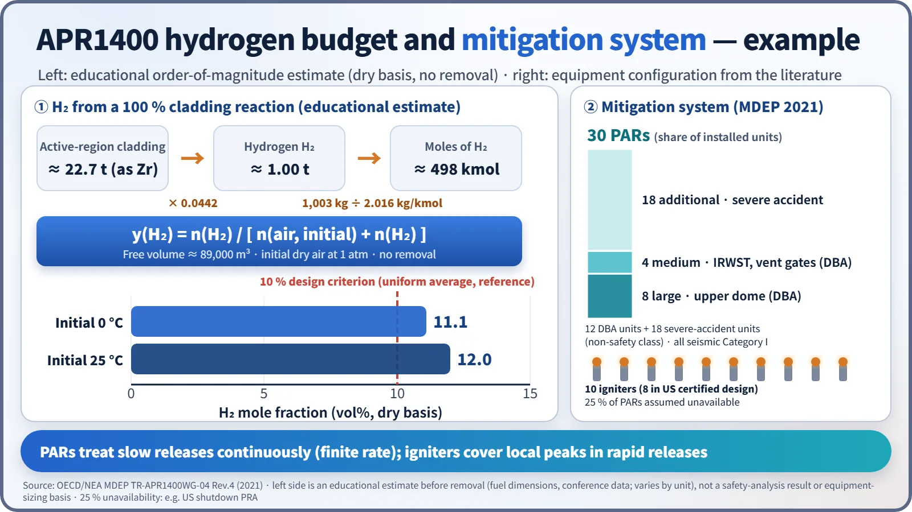
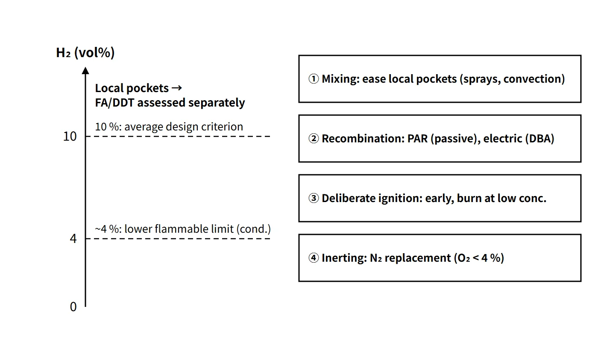

Accidents, Safety Analysis & Severe Accidents · C-SA-003
Containment Hydrogen Control Strategy — Mixing, Recombination, Ignition and Inerting Compared, and the 10 % Criterion
Managing hydrogen concentration and combustion mode by mixing, monitoring, recombination, deliberate ignition and inerting.
Containment hydrogen control is the design and operating strategy that manages hydrogen concentration and combustion mode — by mixing, monitoring, removal (recombination or deliberate ignition) and inerting — so that hydrogen released into containment during an accident cannot damage the containment or essential equipment through deflagration or detonation.
Principle and mechanism
Hydrogen sources in brief
The main source is cladding oxidation (Zr + 2H₂O → ZrO₂ + 2H₂, exothermic). If 1 kg of Zr reacts completely it produces 0.0442 kg of H₂ (about 0.49 m³ at standard conditions). Other sources are radiolysis of water, corrosion of Al and Zn inside containment, and molten core–concrete interaction (MCCI, producing H₂ and CO). In design basis accidents the concern was slow generation such as radiolysis; in a severe accident the generation rate is far higher and exceeds the capacity of DBA recombiners.
Concentration thresholds that set the combustion mode
The hydrogen hazard is judged less by whether hydrogen is present than by how it would burn. The values below are representative for dry air at room temperature and atmospheric pressure; they shift with temperature, steam, turbulence and obstacles.
| H₂ concentration (vol%) | Combustion mode | Effect on containment |
|---|---|---|
| Below about 4 | Flame propagation difficult (catalytic recombination still possible) | None |
| 4–9 | Propagation upward (about 4) → horizontal (about 6) → downward (about 9); burned fraction increases | Small to moderate pressure rise |
| About 10 and above | Deflagration in all directions; with obstacles and confinement, flame acceleration and deflagration-to-detonation transition (DDT) possible | Quasi-static (AICC) to dynamic loads |
| 18.3–59 | Classical detonation limits (experimental-condition values) | Largest impulsive loads |
The 10 % value is a regulatory design criterion, not a universal threshold for DDT. Even when the average is below 10 %, local accumulation and combustion loads are assessed separately.
![APR1400 containment cutaway with PAR, igniter and IRWST labels next to a hydrogen concentration ladder from 0 to 20 vol%: flame barely propagates below 4, direction-dependent propagation from 4 (upward) through 6 (horizontal) to 9 (downward), propagation in all directions above 9, classical detonation limits 18.3 to 59 %, and a dashed 10 % average criterion line; four cards describe mixing, recombination, deliberate ignition and inerting, and a box states the design criterion of an average below 10 vol% or inerting](../../assets/images/concepts/c-sa-003-hydrogen-control/fig1-h2-combustion-ladder.webp)
Concentration alone is not enough. On the hydrogen–air–steam ternary diagram (Shapiro diagram), under representative conditions there is no flammable region when steam exceeds about 55 vol% (steam inerting, dependent on temperature and pressure). But if sprays or heat sinks condense the steam, the same amount of hydrogen can suddenly move into the flammable or detonable region (de-inerting). Limiting the oxygen concentration also suppresses combustion, which is the basis of the inerting strategy. Modern assessments go beyond a simple concentration and use the expansion-ratio σ criterion (flame acceleration) and the 7λ criterion (DDT).
Four control approaches
- Mixing: containment sprays, natural convection and fan coolers prevent local accumulation (the total amount is unchanged). Sprays, however, can condense steam and remove the steam-inert condition.
- Recombination (flameless removal): electric thermal recombiners (electrically heated to several hundred °C) or PARs (Pt/Pd catalyst, typically self-starting at about 1–2 vol%, depending on catalyst condition and humidity) convert H₂ + ½O₂ → H₂O.
- Deliberate ignition: glow-plug igniters (surface about 900 °C) are energized early according to procedures, so the mixture burns off in small amounts at low concentration as soon as it becomes flammable. Igniting late, after hydrogen has accumulated, increases the loads.
- Inerting: nitrogen replacement before operation (BWR Mark I and II; under US rules O₂ below 4 vol%) or CO₂/N₂ injection after an accident rules out combustion altogether.
Dilution and venting involve releasing radioactive material, so they are judged together with depressurization means such as filtered venting.
What it means in a plant
Comparison of three devices
| Item | Electric recombiner | Hydrogen igniter | PAR |
|---|---|---|---|
| Actuation | Manual start by operator, electric heating | Manual start by operator, electric heating | Passive (no power or signal needed) |
| When it starts | When concentration rises after a DBA | Early, per procedure, on signs of core damage | Automatically as soon as hydrogen arrives |
| Location | Inside or outside containment (auxiliary building, circulation through piping) | Near release sources inside containment (SG compartments, around the IRWST) | Containment dome and above release sources, distributed in proportion to free volume |
| Principle | Thermal recombination | Continuous low-concentration combustion | Catalytic surface recombination; reaction heat drives convective inflow |
| Advantages | Flameless; operating experience | Fastest removal; suppresses local high concentrations | No power, no operator action, works in SBO, promotes mixing |
| Disadvantages | Small capacity; needs power and operator action | Inoperable on loss of power; loads increase with late ignition or de-inerting; pressure and temperature spikes | Finite removal rate (limited ability to follow rapid releases); possible ignition source at high concentration; degraded by oxygen starvation or catalyst poisoning |
Choice by containment type
- Large dry PWR: the large free volume keeps the average concentration low. Mixing plus recombination (PAR) is the basis, and APR1400 adds igniters.
- BWR Mark I and II: the containment is small, so nitrogen inerting during operation is mandatory (50.44(b)(2)(i)).
- Ice condenser and Mark III: the US requires igniter systems.
At Fukushima Daiichi (March 2011), hydrogen leaking from inerted Mark I containments accumulated in the upper part of the non-inerted reactor buildings and exploded in the buildings of Units 1, 3 and 4. The case shows that inerting protects only the inside of the containment vessel.
APR1400 hydrogen mitigation system (example)
- Design basis: accommodate the hydrogen from a 100 % fuel-cladding metal–water reaction and keep the average concentration at or below 10 vol%
- 30 PARs: 12 for design basis accidents (8 large units in the upper dome, 4 medium units at the IRWST and vent gates) + 18 for severe accidents (non-safety class), all seismic Category I. Unavailability of 25 % of the PARs is also assumed in analyses (for example, in the US shutdown PRA).
- 10 igniters (8 in the US certified design): back up the PARs for rapid releases, placed near release sources
- The earlier electric recombiners were replaced by PARs.
A rough sense of scale: if about 22.7 t of cladding in the active region (approximated as Zr) reacts completely, about 1.0 t of H₂ (about 498 kmol) is produced. Taking a free volume of about 89,000 m³, initial dry air at 1 atm and no removal, the mole fraction is about 11 % at 0 °C and about 12 % at 25 °C. This is an educational order-of-magnitude calculation showing why the 10 % criterion calls for hydrogen control equipment; it is not a calculation that sizes the equipment.

Regulatory and design criteria
The criteria below are examples from the United States (US NRC) and the IAEA safety standards.
| Basis | Key point |
|---|---|
| 10 CFR 50.44(b) | Existing plants: mixing capability; inerting of Mark I and II; control of hydrogen from a 75 % metal–water reaction in Mark III and ice condenser plants; hydrogen monitoring |
| 10 CFR 50.44(c) | New water-cooled reactors: 100 % cladding–coolant reaction; below 10 vol% when uniformly distributed, or inerting; structural integrity |
| GDC 41–43 | Design, inspection and testing of containment atmosphere cleanup (hydrogen and oxygen control) |
| IAEA SSR-2/1 Rev.1 | Requirements for controlling combustible gases in containment |
The 2003 revision of 10 CFR 50.44 removed the US design basis LOCA hydrogen requirements (recombiners and purge) and shifted the focus to severe accident hydrogen. The electric recombiner belongs to the design concept before this change.
Easily confused pairs
| Recombination (PAR) | Deliberate ignition | Inerting | Venting | |
|---|---|---|---|---|
| What happens to H₂ | Converted to water | Consumed by burning | Left in place (combustion blocked) | Released outside containment |
| Speed | Slow, continuous | Fast | Not applicable | Fast |
| Power | Not needed | Needed | Not needed if replaced beforehand | Can be passive |
| Side effect | Ignition source at high concentration | Pressure spikes | Access restrictions | Release of radioactive material |
"At 4 % it explodes" is wrong. 4 % is the lower flammability limit for upward propagation; detonation needs much higher concentrations and particular geometric conditions. Turning igniters on late is actually more dangerous. Also remember that mixing evens out the concentration distribution but does not reduce the total amount.
Key points at a glance
- Definition: a strategy of mixing, monitoring, removal and inerting that protects the containment and essential equipment from hydrogen deflagration and detonation in an accident.
- Sources: Zr–steam reaction (main), radiolysis, Al/Zn corrosion, MCCI (H₂, CO).
- Criteria: lower flammability limit for upward propagation about 4 vol% (condition dependent); classical detonation limits 18.3–59 %; local FA/DDT assessed separately; steam-inert when steam is high (representative 55 %).
- Design criterion: average below 10 vol% for uniform hydrogen from a 100 % cladding reaction (for example, US 10 CFR 50.44(c)).
- Recombination: electric (DBA, needs power); PAR (passive, finite removal rate).
- Igniters: early energization → continuous low-concentration burning; need power; late ignition increases loads.
- Inerting: nitrogen replacement in BWR Mark I and II (O₂ < 4 %); at Fukushima, hydrogen leaking into the buildings exploded.
- APR1400: 30 PARs (12 DBA + 18 severe accident), 10 igniters (per MDEP 2021).
